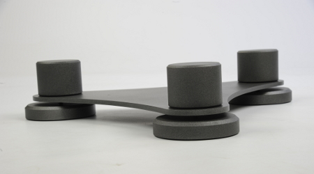
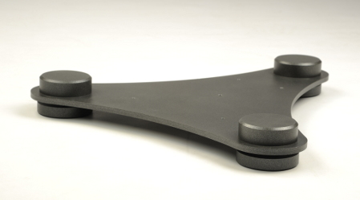

High end ondersteuning
voor alle luidsprekersMet de luidspreker ondersteuning van Cilicus krijgt u het beste geluid uit uw speakers. Door een combinatie van materiaalkeuze en gewichtsverdeling komt er een einde aan geluidsinterferentie en resonantie.

Voor alle luidsprekers
Twee uitvoeringen, voor groot en kleinDe speaker ondersteuningen van Cilicus zijn voor alle formaten boxen beschikbaar. De ondersteuning is verkrijgbaar in een normale versie en een XL versie voor speakers van formaat.